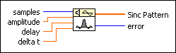
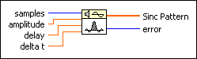

Sinc Pattern VI
Owning Palette: Signal Generation VIs
Requires: Full Development System
Generates an array containing a sinc pattern.

 Add to the block diagram Add to the block diagram |
 Find on the palette Find on the palette |
Owning Palette: Signal Generation VIs
Requires: Full Development System
Generates an array containing a sinc pattern.

| Add to the block diagram |
Find on the palette |
 |
samples is the number of samples of the Sinc Pattern. The default is 128. samples must be greater than or equal to 0. If samples is less than zero, the VI sets Sinc Pattern to an empty array and returns an error. |
 |
amplitude is the amplitude of Sinc Pattern. The default is 1.0. |
|
delay shifts the peak value within the Sinc Pattern as the VI generates the pattern. The default is 0.0. The peak value of the Sinc Pattern occurs at the index value i = delay/(delta t). |
|
delta t is the sampling interval. The default is 0.1. It is a floating-point number inversely proportional to the width of the main sinc lobe. That is, the smaller the sampling interval, the wider the main lobe; the larger the sampling interval, the smaller the main lobe. Notice that when delta t is 1, and delay is an integer value, the VI sets Sinc Pattern to zero except at the point where i = delay. At this point, the value is equal to amplitude. The recommended range of values for the sampling interval is 0 < delta t < 1. delta t must be greater than 0.0. If delta t is less than or equal to zero, the VI sets Sinc Pattern to an empty array and returns an error. |
 |
Sinc Pattern returns the array containing the sinc pattern of samples. The largest Sinc Pattern the VI can generate depends on the amount of memory in your system and is theoretically limited to 2,147,483,647 (231 – 1) elements. |
 |
error returns any error or warning from the VI. You can wire error to the Error Cluster From Error Code VI to convert the error code or warning into an error cluster. |
If the sequence Y represents Sinc Pattern, the Sinc Pattern VI generates the pattern according to the following equation.
yi = asinc(i t – d)
t – d)
for i = 0, 1, 2, …, n – 1,
where , a is the amplitude, t is the sampling interval delta t, d is the delay, and n is the number of samples.
The main lobe of the sinc function, sinc(x), is the part of the sinc curve bounded by the region –1  x 1.
x 1.
When |x| = 1, the sinc(x) = 0.0, and the peak value of the sinc function occurs when x = 0. Using L'Hopital's Rule, you can show that sinc(0) = 1 and that this is also its peak value. Thus, the main lobe is the region of the sinc curve encompassed by the first set of zeros to the left and the right of the sinc value.